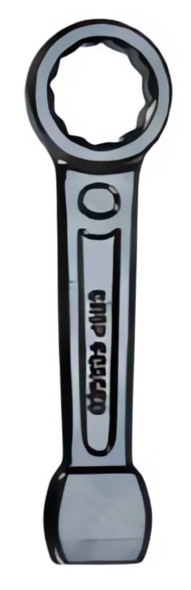

GROZ · Spanners & Wrenches
Slogging Wrenches
CAT NR OSW/50 · ORD NR 31860
| CAT NR (catalogue number) | OSW/50 |
|---|---|
| ORD NR (order number) | 31860 |
| Size (mm) | 50 |
| Box quantity | 15 |
| Table section | OPEN JAW SLOGGING WRENCHES |
Ask for a quote The catalogue PDF, page 200
“Ask for a quote” opens this product in the catalogue: add it to your quote and send it. Buyers from Africa, the Gulf and worldwide are welcome; prices in USD, EUR or INR.
From the GROZ Workshop Tools CB-05 catalogue. Not yet verified: these details were read from the printed catalogue automatically; check the catalogue page before ordering.